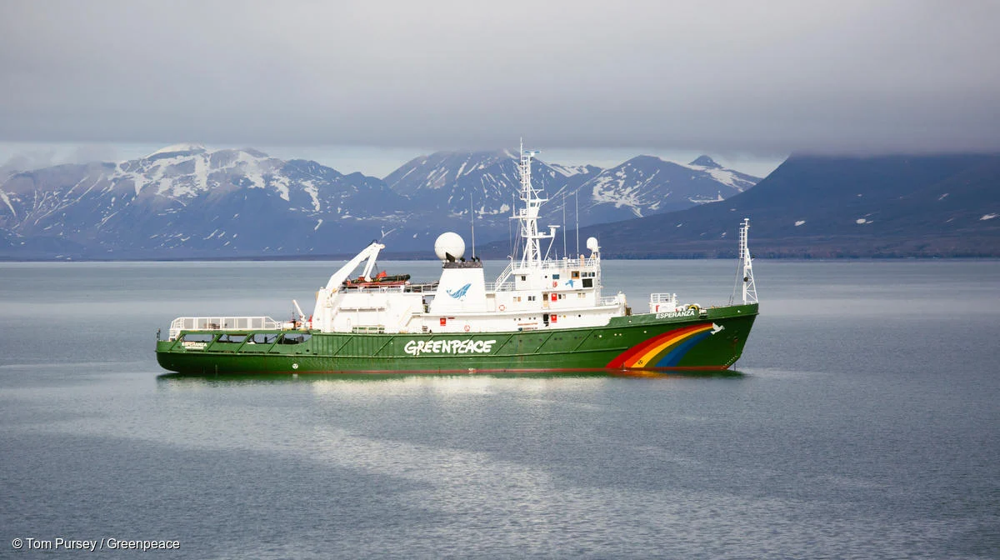
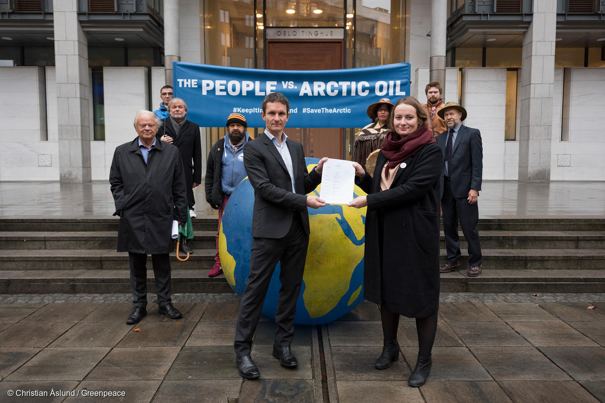
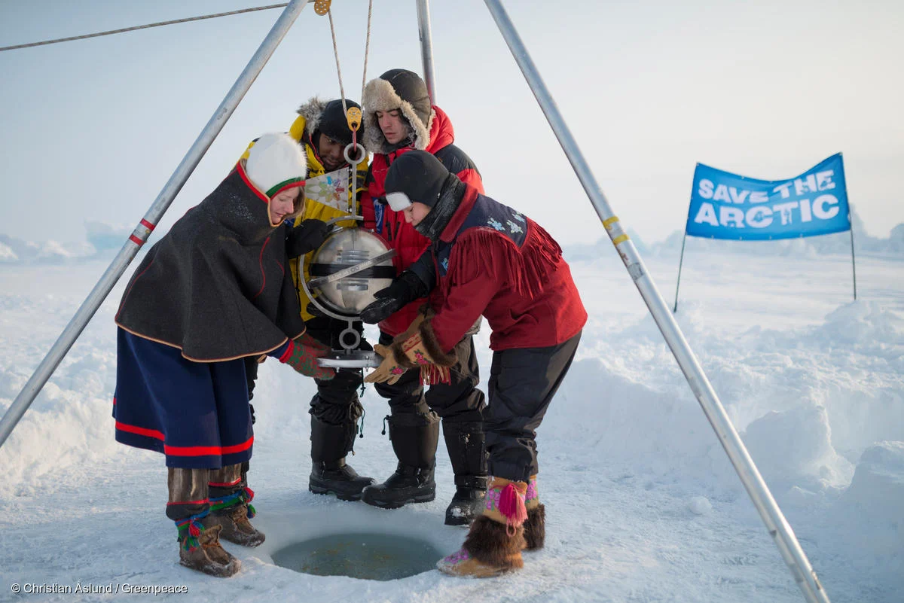

1. 개인 행동의 변화
"일상에서 탄소 배출량을 줄이는 행동이 북극 보호에 기여할 수 있습니다"
"에너지 절약(LED 조명 사용, 에너지 효율 높은 가전제품 사용), 대중교통 이용, 재활용 실천 등
실생활에서의 작은 노력이 필요합니다"
도전 과제
2. 기업과 산업의 역할
"화석 연료 의존도를 줄이고 재생 가능 에너지를 활용해야 합니다"
"북극 자원 개발 시 환경에 미치는 영향을 최소화하는 기술을 개발하고 채택해야 합니다"
도전 과제
3. 정부와 국제 사회의 협력
"정부는 탄소 배출을 줄이기 위한 법적 규제와 재정 지원을 강화해야 합니다"
"국제 사회는 북극 이사회와 같은 기구를 통해 기후 변화와 자원 개발에 대한 글로벌 규제를 마련해야 합니다"
도전 과제
4. 기술 혁신과 연구
"기후 변화 예측을 위한 인공지능(AI)과 위성 기술 활용"
"북극 생태계 복원 기술 개발 및 기후 변화에 강한 종의 보존 연구"
